<article class="docs-article">
    <section class="docs-section" id="rpa">
        <div>
            <h1>Integrating Robocorp’s RPA solution with formflow.ai </h1>
            <hr><br>
            <h2>Boosting Camunda’s Workflows with Robots</h2>
            <br>
            <p>Formsflow.ai is a completely free and open-source framework built and maintained by the AOT Technologies
                team to integrate intelligent forms, decision-making workflows, and powerful analytics. While working
                with various clients who needed forms and workflow management, the team recognized the usefulness of
                triggering external tasks from outside of the formsflow.ai ecosystem. </p>
            <p>For creating and executing decision-making workflows, formsflow.ai uses a powerful Camunda BPMN, which
                supports external service tasks that can be extended to automate tasks. formsflow.ai makes use of this
                powerful external task client to process the robot’s instructions and return a response. That’s how
                RPA’s integration with Formsflow.ai came into existence.</p>
            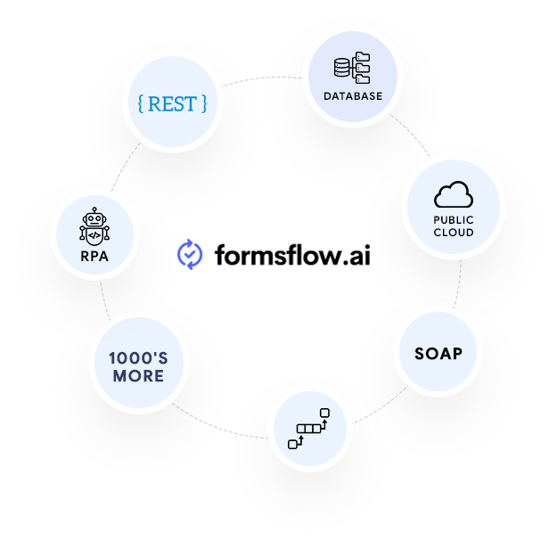
            <figcaption>formsflow.ai integrations</figcaption><br><br>

            <p>RPA, or robotic process automation, is a hot topic nowadays. It’s a type of business process automation
                technology making it easy to build, deploy, and manage software robots that mimic human interactions
                with digital systems and software. Just like normal users, software robots can do such things as
                understanding what is on a desktop screen, autofilling data and entering keystrokes, navigating through
                systems, identifying and extracting data from different sources, and performing a wide range of defined
                actions. </p>
            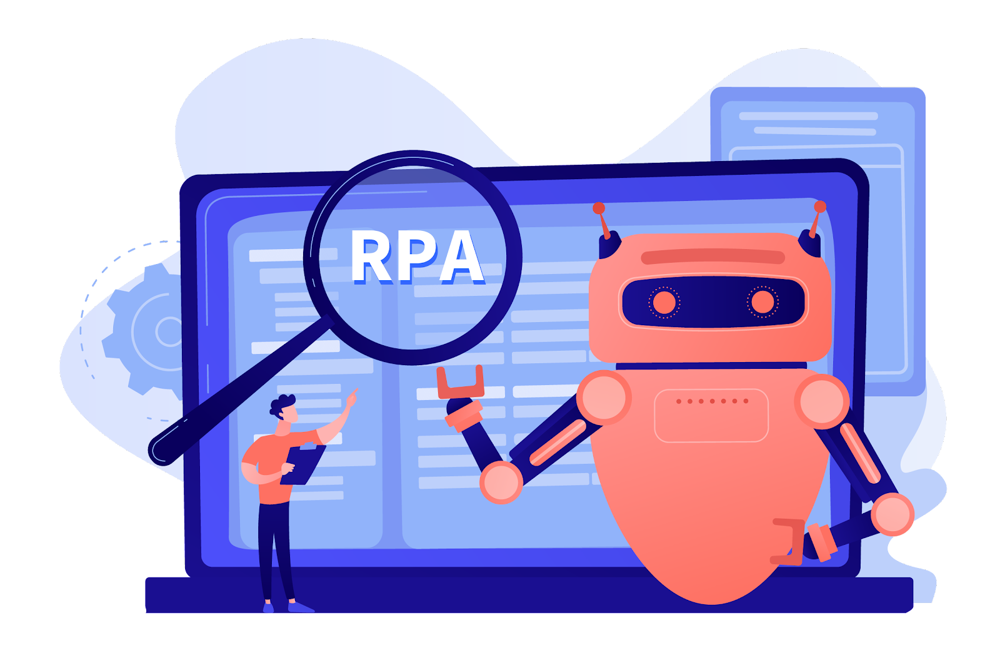<br><br>
            <p>The formsflow.ai team had been searching for an RPA solution that would meet the following criteria:</p>
            <ul>
                <li>Was open source</li>
                <li>Had good support for the tools and libraries that would build and deploy the robots</li>
                <li>Was easy to use</li>
            </ul>
            <p>After checking various options, the AOT team chose <a href="https://robocorp.com/">Robocorp</a>’s RPA solution. </p>
            <p>Robocorp supports automating any system that a robot has access to, be it a desktop application, API,
                mainframe, database, FTP server, or an image stream of the user interface. Robocorp gives you the tools
                to build and deploy the robots according to your requirements, unlike predefined robots offered by other
                RPA solutions. And on top of everything it’s an open-source solution.</p>

            <br><br>
            <h3>The formsflow.ai RPA-Robocorp-Extension</h3><br>
            <p>RPA-Robocorp-Extension implementation details can be seen in this <a
                    href="https://github.com/AOT-Technologies/forms-flow-ai-extensions/tree/master/rpa-robocorp-extension">GitHub
                    repo</a>.

            </p>
            <p>Let’s start with installing the formsflow.ai Camunda RPA client. There are two installation options, one
                standalone, the other Docker based.</p><!--  -->
            <ul>
                <li>For a standalone installation you’ll need Java, Maven, the Robocorp RCC toolchain, and a cloud
                    account. </li>
                <li>For a Docker-based installation, you’ll need to install Docker if needed, and get Docker up and
                    running. You can then modify the variables and run the application in Docker. </li>
            </ul>

            <p>Now let’s look at the system architecture: </p>
            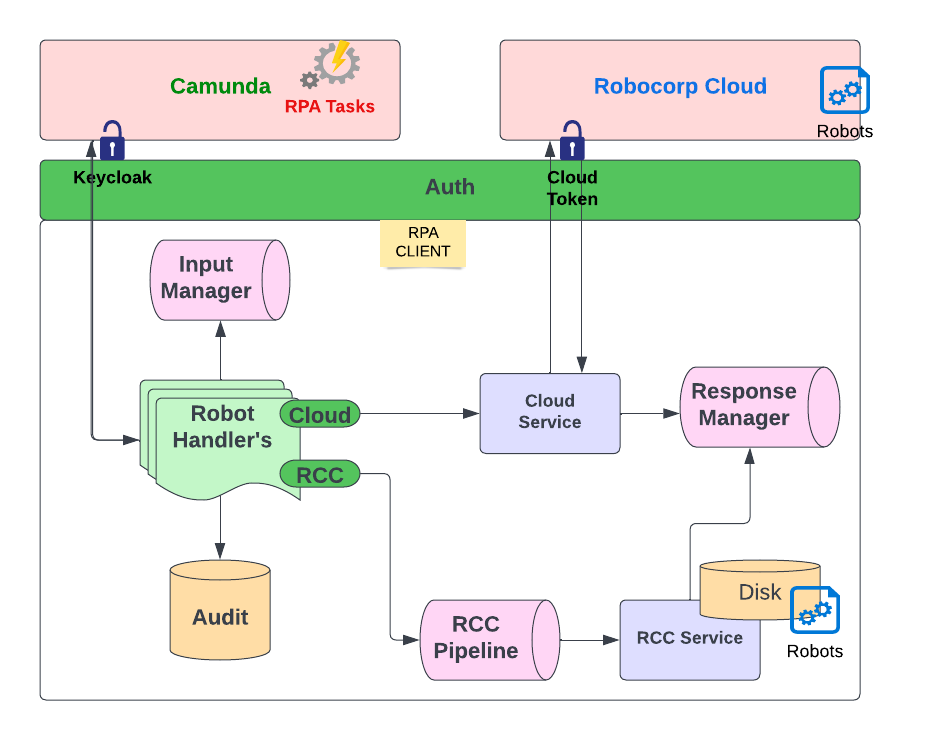<br><br>
            <p>As you can see in the architecture diagram, there are two components: the formsflow.ai Camunda service
                task and the external RPA client. </p>
            <p>We are using Camunda's powerful workflow feature called a service task, which can serve as an event in a
                pub-sub (publish/subscribe) model, with a unique topic assigned to it. Once Camunda publishes a piece of
                data, the external task client (developed using the Camunda extension) can pick up the task and execute
                the job in the following order:</p>
            <ol>
                <li>Capturing input data.</li>
                <li>Performing a timely audit.</li>
                <li>Getting the robot’s configuration details.</li>
                <li>Running the robot.</li>
                <li>Capturing the response.</li>
                <li>Completing the task.</li>
            </ol>
            <h3>Authentication Manager</h3>
            <p>The RPA system has to maintain a constant connection with Camunda in order to process the request and
                execute the robot. So in order to establish a secure connection the RPA client needs to authenticate
                through Camunda. The RPA system has built-in options for configuring a type of basic authentication or a
                Keycloak-based token authentication.</p>
            <h3>Robot Data Manager</h3>
            <p>The robot data manager is the primary datastore for recording an audit history to know if a robot was
                successful, and if it wasn’t, to provide information for debugging such as how long it took the robot to
                complete its tasks and other analytics.</p>
            <h3>Robot IO Manager</h3>
            <p>A robot can be triggered with or without input parameters and the same applies to output. The output can
                be of different types including primitive type data, single files, multiple files, and an empty
                response. The output can be configured and handled only using a robot IO manager.</p>
            <h3>Robot Manager</h3>
            <p>A robot can be started using the robot manager, which identifies the path that contains the robot’s
                instructions and runs the robot using an API or command-line tool depending on the configuration
                provided.</p>
            <h3>Robot Pipeline Service</h3>
            <p>The robot pipeline service comes into picture when RCC is configured as the execution environment. In
                that situation the service can create a pipeline or bridge between the command line and the Java API.
            </p>
            <br>
            <h2>Sample Use Case: Background Check Verification</h2>
            <p>In collaboration with Robocorp we developed a way to automate background checks on business-licence
                applicants by having a robot perform web scraping. Here’s how we did it:</p>
            <h3>Step 1: Build the Robot
            </h3>
            <p>First, you need to create your robot using the Robocorp framework. In particular, we’ll be using <a
                    href="https://robocorp.com/docs/developer-tools/robocorp-lab/overview">Robocorp
                    Lab</a>, which provides open-source components as an easy way to get started developing software
                robots.</p>
            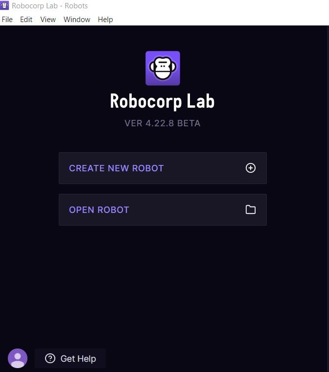<br><br>
            <p>Our background-check robot first extracts a business application form’s input variables before starting
                the web scraping. It will then record screenshots of pages in the following categories before compiling
                these shots as a PDF file:</p>
            <ul>
                <li>The company’s social-media profile on such sites as Linkedin, Twitter, Facebook, and Instagram.</li>
                <li>The business’s working website, if it has one.</li>
                <li>Google’s search results about the company.</li>
                <li>Checking if the company is blacklisted, presuming it’s opening up in Canada.</li>
            </ul>
            <p>The PDF file can be downloaded in formsflow.ai by the Reviewer of the application form, and then sent on
                for an Approver’s response.</p>
            <h3>Step 2: Create the Camunda Workflow</h3>
            <p>Next you’ll create a Camunda workflow that includes a two-step approval process:</p>
            <ul>
                <li>Create a process diagram with an external service task using Camunda Modeler and define the topic
                    name.</li>
                <li>Then deploy the process to the Camunda platform engine.</li>
            </ul>
            <br><br>
            <h3>Step 3: Use External Task Handler to Link Robot to Camunda</h3>
            <p>We need to create an external task handler for each robot. The task handler uses the Camunda REST API to
                fetch, lock, and complete all the required external service tasks. We can configure the Java handler to
                custom override all the methods needed to manage and run the robot. This process relies on an external
                task subscription. Also, you will need to define the topic name as shown below. The topic name should be
                similar to the robot name.</p>
            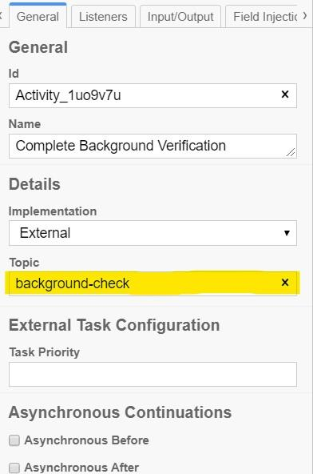<br><br>
            <h3>Step 4: Create the Form Using formsflow.ai</h3>
            <p>Next you’ll create the form using the drag-and-drop interface of the formsflow.ai design mode. Log in as
                a formsflow.ai Designer using the form design page. </p>
            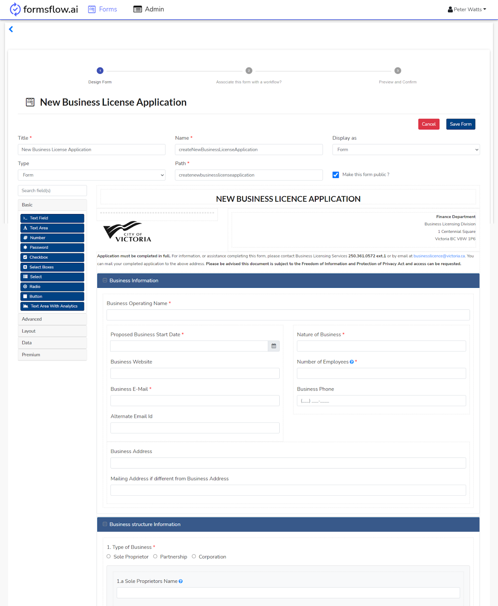<br><br>
            <h3>Step 5: Associate a Workflow, then Publish the Form</h3>
            <p>Once you’ve completed the form design, publish the workflow to Camunda and associate the form with the
                workflow you created in step 2.</p><br>
            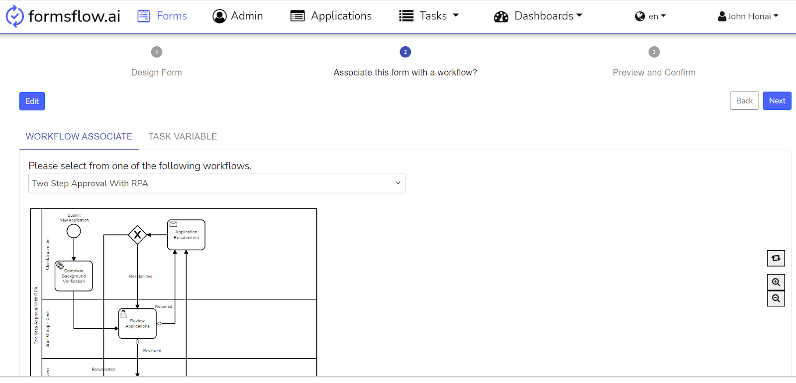<br><br>
            <p>We can then publish the form you designed in order to make it available for clients to fill out. </p>
            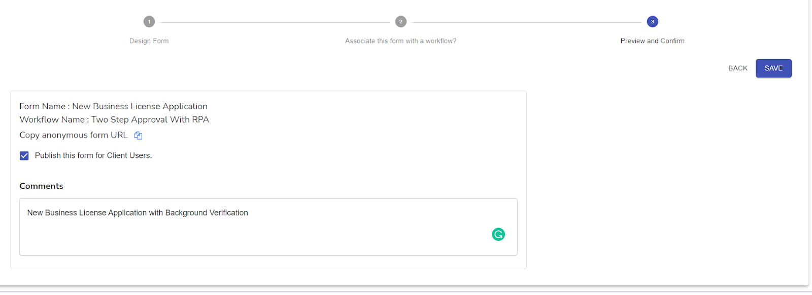<br><br>
            <p>Here’s an example of how a client filled out a sample business licence application:</p><br>
            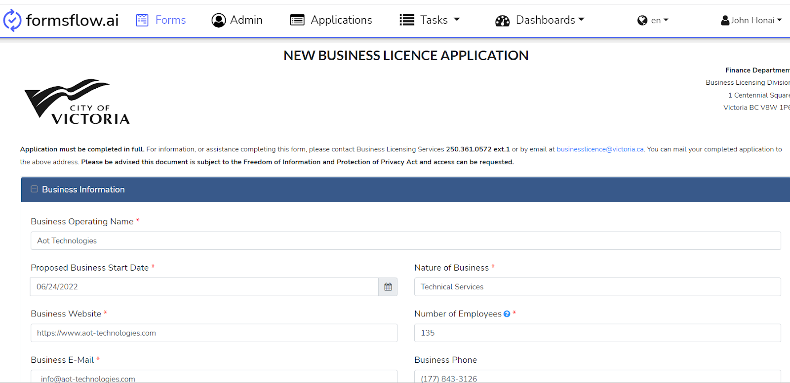<br><br>
            <h3>Step 6: Start the Robot</h3>
            <p>After the form is filled out and submitted, the associated workflow will be triggered, and an external
                service task will then start the robot. You can run your robot either directly by using RCC or
                indirectly by starting a cloud instance.</p>
            <i>
                <h4>Step 6A: Using the RCC Method</h4>
            </i>
            <p>RCC is a set of tooling that allows you to create, manage, and distribute Python-based self-contained
                automation packages.</p><br>
            <p>Configure your robot type to ROBOCORP_RCC so the robot will run using the RCC method. To run Robocorp RCC
                directly, you have to add your robots to your resources folder.</p>
            <p>After the user fills out and submits the form, the robot will be triggered and will do its task.</p>
            <p>With RCC you can use parallel robot invocation by placing your robots in multiple holotree spaces. It’s
                not a complete parallel solution as you’ll have to keep in mind that each robot runs only once until it
                receives a new request.</p>
            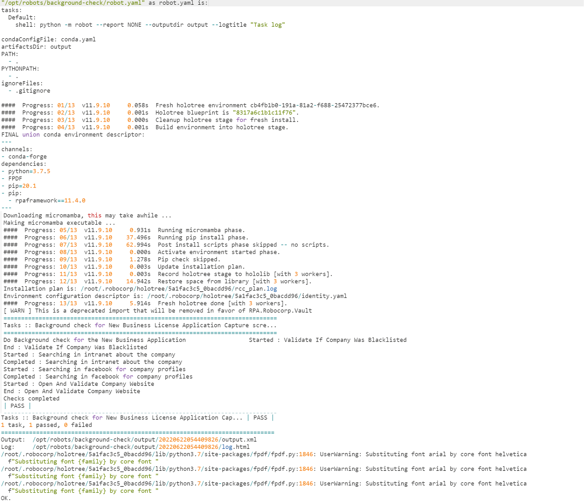<br><br>
            <p>After the robot has completed its task, the response file can be downloaded from the form’s page in
                formsflow.ai.</p>
            <i>
                <h4>Step 6B: Using the RPA Cloud Method</h4>
            </i>
            <p>If you’re using the cloud, you’ll need to set up a cloud account and provide your robot type, workspace
                ID, and process ID to ROBOCORP_CLOUD. You can run multiple processes here, or choose parallel execution.
            </p>
            <p>All aspects of your robot workforce can be controlled in the cloud, including triggering the robot,
                uploading and downloading robots, monitoring their status, and getting the results of their work through
                simple API calls.</p><br>
            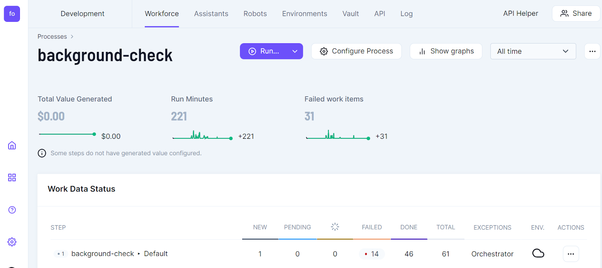<br><br><br>
            <p>
                Once the new business licence form has been submitted, the cloud-based robot will be triggered and will
                start processing.
            </p><br><br>
            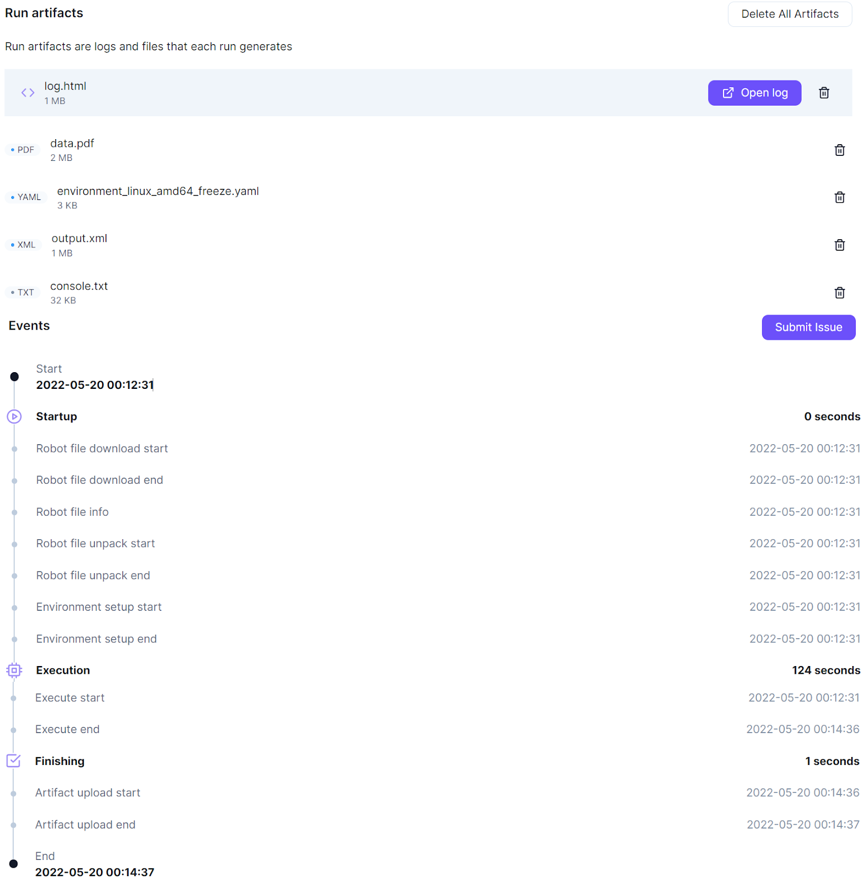<br><br><br>
            <p>You can monitor your robot’s activities in the cloud and afterwards check the logs in your workspace.</p>
            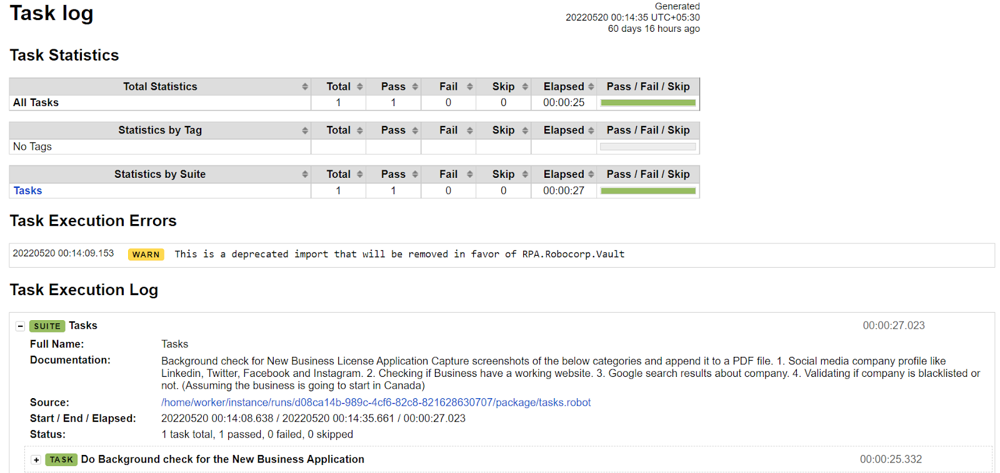<br><br><br>
            <h3>Step 7: Download the PDF Report</h3>
            <p>After the robot has completed its task, a response file will be created. Below you can see a sample PDF
                that was generated by the robot using our sample form data and then downloaded from the forms page on
                formsflow.ai.</p>
            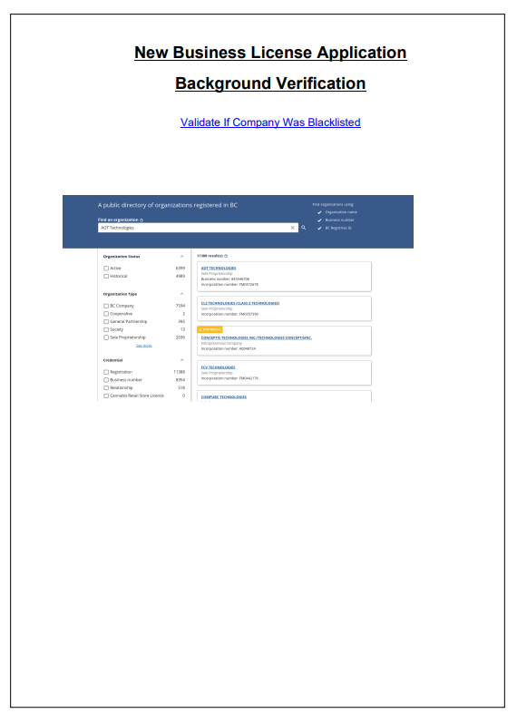<br><br><br>
            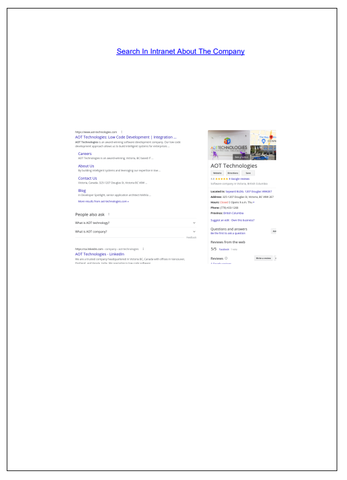<br><br><br>
            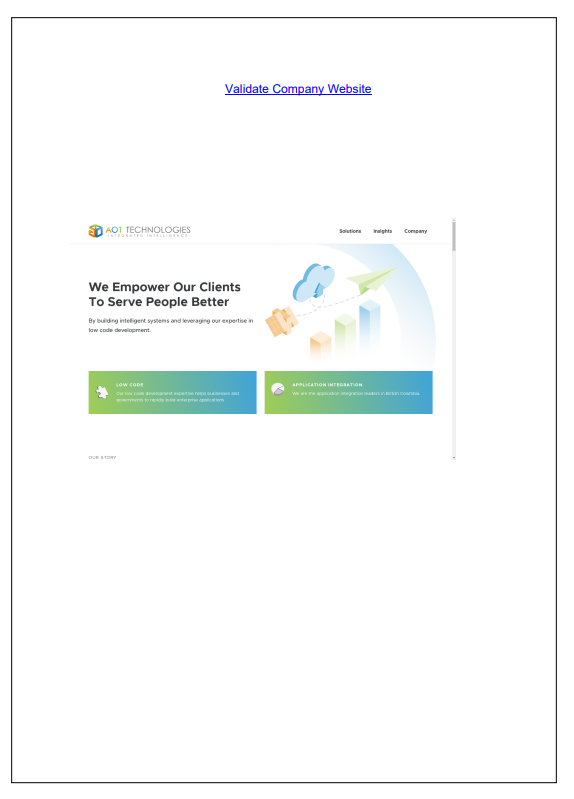<br><br><br><br>
            <p>And here you can see the link to the PDF for download:</p>
            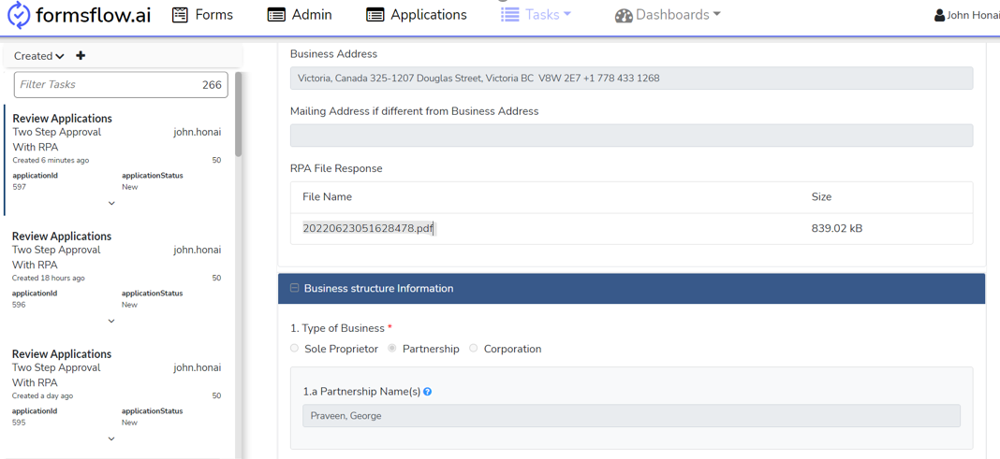<br><br><br>
            <h3>Step 8: Finishing the Approval Process</h3>
            <p>The downloaded file can be reviewed in formsflow.ai by a user in the Reviewer role, who can then either
                Reject the form or mark it as Reviewed with Comments.</p>
            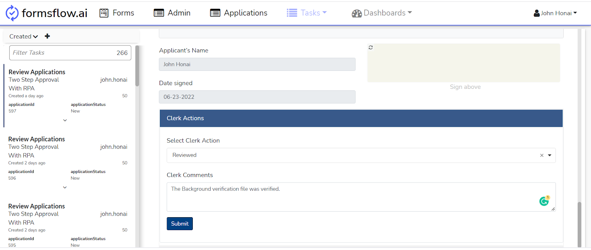<br><br><br>
            <h2>Challenges Integrating Robocorp with formsflow.ai</h2>
            <hr><br>
            <p>There are many great features that Robocorp integration offers. However, you should remember that
                parallel robot invocation is a bit limited. Each robot will only run once until it receives a new
                request.</p>
            <h3>Future Integrations</h3>
            <p>Automating tedious manual work can let companies more effectively utilize their resources and increase
                their profit. In the next few years RPA has the potential to replace a great variety of manual tasks
                performed by people, who can then focus on scenarios requiring more nuanced human judgment. Ultimately
                RPA can be applied anywhere there is a tedious manual task, which could range from simple web scraping
                to data migration and validation. </p>

        </div>
    </section>
</article>